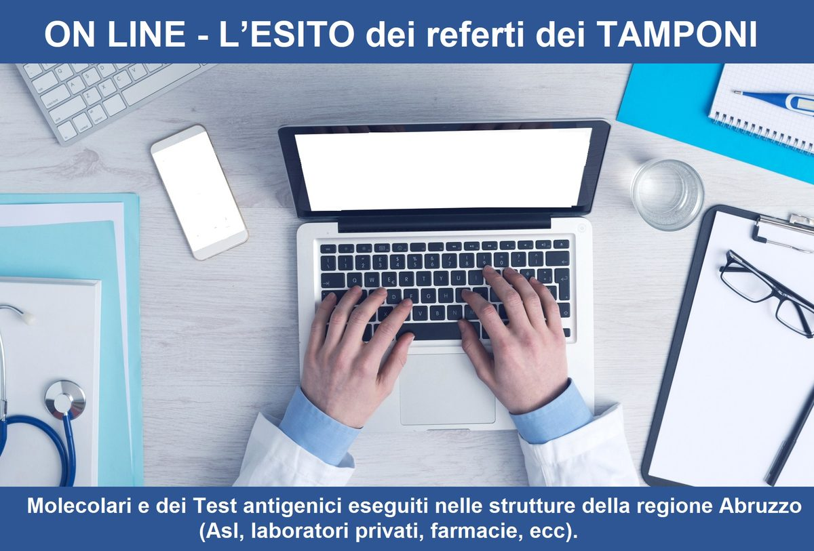

#CONSIGLI👥
⬆️📌 Dal 12 GENNAIO è possibile visualizzare ONLINE - L'ESITO dei referti dei TAMPONI molecolari e dei test antigenici eseguiti nelle strutture della regione Abruzzo (Asl, laboratori privati, farmacie, ecc).
🔷 Per fronteggiare l'emergenza epidemiologica, l'Assessorato regionale alle salute ha sviluppato e reso attivo dal 12 gennaio un nuovo servizio: CONOSCERE DA REMOTO GLI ESITI DEI TAMPONI EFFETTUATI.
🔷 Attraverso la piattaforma “MIA” (portale di raccolta dei dati ed informazioni personali) sarà garantita, agli utenti, la visualizzazione dei referti dei tamponi molecolari e dei test antigenici eseguiti nelle strutture del territorio abruzzese (ASL, laboratori privati, farmacie, ecc.). Essa è una raccolta on line di dati ed informazioni che sarà nel tempo ampliata con altri nuovi servizi. Un punto di accesso unico, comodo, sicuro e sempre disponibile.
🔷 Nel rispetto delle norme in materia di privacy, il portale consentirà di conoscere direttamente l'esito del test effettuato, senza attendere che sia l’operatore della ASL o il proprio medico di fiducia, a fornire l’informazione. Il sistema, inoltre, consentirà di visualizzare tutte le informazioni inserite nel tempo attraverso il sistema di tracciamento tamponi (a partire da Aprile 2020).
🔷 Sarà sufficiente collegarsi con uno smartphone, o dal pc di casa, al sito https://mia.regione.abruzzo.it, e dall’area “MIA Salute" è possibile consultare il referto (per accedere è necessario o lo Spid, o le CIE oppure il sistema eIDAS).
Se lo desideri, iscriviti ai mie canali social per restare aggiornato ⬇️
Social MediaInoltre se hai trovato utile ed interessante questo articolo, non esitare a condividerlo, a lasciare un tuo mi piace 👍, o seguire la mia pagina Facebook, per sostenermi e continuare ad informare. Grazie anticipatamente a chi vorrà farlo.